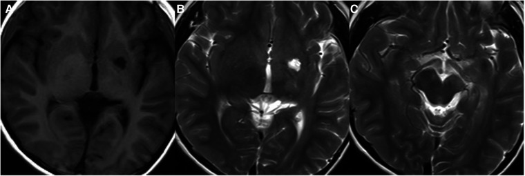
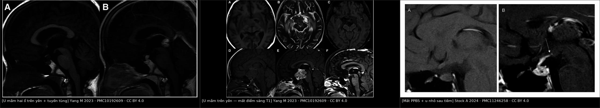
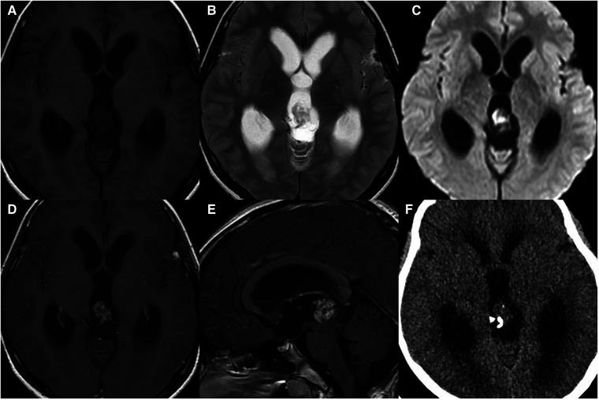
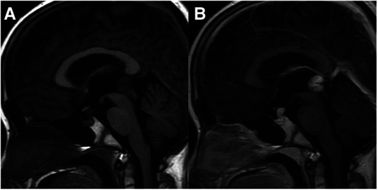
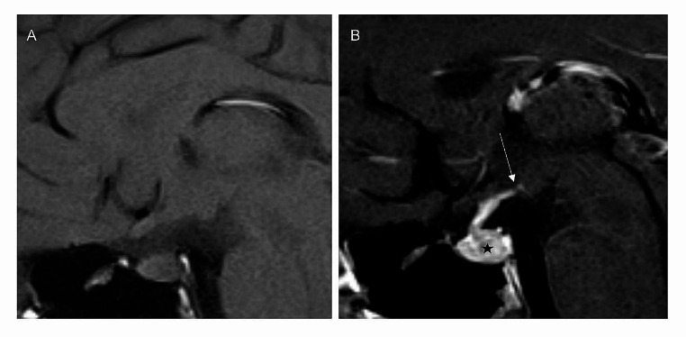

1731 — U mầm nội sọ vùng trên yên ở trẻ / Pediatric intracranial germ cell tumor (suprasellar & midline)
Tags: pattern:khong-duong-giua pattern:ngam-thuoc pattern:mat-diem-sang-T1 pattern:han-che-khuech-tan vung:tuyen-yen vung:so-yen vung:tuyen-tung vung:nao protocol:MRI-nao-tuy protocol:marker-u protocol:sinh-thiet incidentaloma:khong
Mức chắc chắn (certainty): tổng hợp y văn (literature synthesis) — 1 tổng quan hình ảnh 2023 (Front Pediatr, PMC10192609), 1 nghiên cứu 102 bệnh nhân về mất điểm sáng thùy sau tuyến yên (Neuroradiology 2024, PMC11246258), 1 báo cáo cuối của SIOP-CNS-GCT II (Neuro-Oncology 2026, PMC13550669), 1 nghiên cứu về CSF-PLAP (Neuro-Oncology Advances 2026, PMC13265377) và 1 abstract SIOP về u mầm không tinh bào hai ổ (Neuro-Oncology 2024, PMC11183728). Không có ca nguyên văn đơn lẻ nào của nhóm tự viết; mọi ca trong quiz là ca có ảnh từ bài gốc, ghi rõ PMCID.
Câu chốt: u mầm nội sọ là khối đường giữa của trẻ lớn (10–19 tuổi) và là loại u não duy nhất có thể chẩn đoán mà KHÔNG cần sinh thiết — bằng AFP/hCG (và CSF-PLAP). Hai câu hỏi quyết định: (1) có marker chẩn đoán không? (nếu có → điều trị luôn, không mổ); (2) còn điểm sáng T1 thùy sau tuyến yên không? (mất sớm, trước khi khối to → đây là dấu hiệu bắt được u khi còn rất nhỏ). Sai lầm chết người: cho corticoid trước khi lấy marker (u tinh bào teo nhanh, mất bằng chứng, không còn mô để chẩn đoán) và bỏ sót đái tháo nhạt ở trẻ "đái nhiều" với MRI ban đầu bình thường.
1. Tổng quan bệnh học – cơ chế hình ảnh
1.1 Nguồn gốc và phân loại
- Định nghĩa: u mầm nội sọ (intracranial germ cell tumor, iGCT) phát sinh từ tế bào mầm nguyên thủy di cư lạc (hoặc từ tế bào tiền thân nội sinh) dọc đường giữa cơ thể — vì vậy hầu hết nằm ở tuyến tùng (50%), vùng trên yên (20–30%), hạch nền–đồi thị (5–10%); 6–13% có hai ổ đồng thời ở tùng + trên yên (bifocal) (PMC10192609).
- Dịch tễ: 0,9% tổng số u ở trẻ, 3,7% u não trẻ, 28,7% tổng số u mầm của cơ thể; đỉnh 10–19 tuổi, 71% chẩn đoán trước 20 tuổi; Nhật Bản/Đông Á cao hơn phương Tây (PMC10192609).
- Phân loại WHO 2021: u tinh bào (germinoma) — 50–70% — và u mầm không tinh bào (non-germinomatous germ cell tumor, NGGCT) gồm u túi noãn hoàng, ung thư phôi, choriocarcinoma, u quái (trưởng thành/chưa trưởng thành), u mầm hỗn hợp. Phân biệt germinoma vs NGGCT không dựa vào hình ảnh đơn thuần mà dựa vào marker ± mô bệnh.
1.2 TẠI SAO hình ảnh lại như vậy
- T2 iso/hyper + ngấm thuốc mạnh + hạn chế khuếch tán (ADC thấp): u tinh bào là khối tế bào dày đặc, tỉ lệ nhân/bào tương cao, ít mô đệm → nước nội bào ít, khuếch tán bị cản; mạch máu u chưa trưởng thành nhưng hàng rào máu–não bị phá vỡ → ngấm thuốc đồng nhất, mạnh. Đây là lý do DWI/ADC hữu ích: ADC thấp gợi u tinh bào hơn NGGCT, nhưng không đủ để chẩn đoán.
- Vôi hóa "bị nuốt" (engulfed) ở u tinh bào tùng: u phát triển bao quanh vôi hóa tuyến tùng có sẵn → vôi hóa nằm trong khối, bờ vôi hóa không đều. Ngược lại u nguyên bào tùng (pineoblastoma) có vôi hóa "nổ" (exploded) ở ngoại vi khối, và chỉ thấy vôi hóa tuyến tùng sau 4 tuổi (trước 4 tuổi không có vôi hóa sinh lý để "nuốt") (PMC10192609).
- Mất điểm sáng T1 thùy sau tuyến yên (posterior pituitary bright spot, PPBS): thùy sau tuyến yên chứa hạt bài tiết vasopressin/oxytocin — bản chất là phức hợp neurophysin–hormone giữ nước, cho tín hiệu T1 cao tự nhiên. Khi u mầm xâm nhập thùy sau/cuống yên, mất các hạt này → mất điểm sáng, đồng thời mất khả năng cô đặc nước → đái tháo nhạt (diabetes insipidus, DI). Đây là dấu hiệu sớm nhất, có thể xuất hiện khi khối chỉ vài mm và chưa thấy trên T1 sau tiêm (PMC11246258).
- TẠI SAO u trên yên hay chẩn đoán muộn: triệu chứng ban đầu chỉ là đái nhiều – uống nhiều, dễ bị coi là thói quen; thời gian từ MRI đầu tiên đến điều trị ở u tinh bào trên yên khu trú có trung vị 312 ngày — dài hơn NGGCT (p = 0,002) (PMC11246258). Khối nhỏ, không gây chèn ép, không tăng áp lực nội sọ → không có "đèn đỏ" lâm sàng.
- Hạch nền – đồi thị: u mầm ở đây thường không ngấm thuốc hoặc chỉ ngấm vá ở giai đoạn sớm, nhưng có T2 hơi cao, nang nhỏ, và đặc biệt tín hiệu thấp trên SWI (vi chảy máu/hemosiderin) + teo bán cầu/trụ não cùng bên do thoái hóa Waller — hai dấu hiệu giúp phân biệt với nhồi máu hạch nền ở trẻ (PMC10192609).
1.3 Ngưỡng định lượng trụ cột
| Đại lượng | Con số | Nguồn |
|---|---|---|
| Tỉ lệ trong u não trẻ / tổng u mầm cơ thể | 3,7% / 28,7%; đỉnh 10–19 tuổi, 71% < 20 tuổi | PMC10192609 |
| Vị trí: tuyến tùng / trên yên / hạch nền / ngoài đường giữa / hai ổ | 50% / 20–30% / 5–10% / 6–10% / 6–13% | PMC10192609 |
| U tinh bào trong tổng số u mầm nội sọ | 50–70% | PMC10192609 |
| Mất PPBS ở u mầm vùng dưới đồi–thùy sau yên (102 bệnh nhân) | > 90% ở mọi vị trí/thể, liên quan đái tháo nhạt | PMC11246258 |
| Độ dày cuống yên bất thường ở trẻ (ngưỡng đồng thuận) | > 3 mm | PMC11246258 |
| Trung vị thời gian từ MRI đầu → điều trị (u tinh bào trên yên khu trú) | 312 ngày (chậm hơn NGGCT, p = 0,002) | PMC11246258 |
| Marker chẩn đoán NGGCT (SIOP) | AFP > 25 ng/mL và/hoặc hCG > 50 IU/L (huyết thanh hoặc dịch não tủy) | PMC11246258 |
| Nguy cơ cao trong NGGCT (chỉ định tăng liều hóa trị) | AFP > 1.000 ng/mL | PMC11183728 |
| CSF-PLAP cắt 8 pg/mL cho u tinh bào | Se 100% · Sp 95,2% (134 ca có mô bệnh) | PMC13265377 |
| SIOP-CNS-GCT II: u tinh bào khu trú (166 ca) | EFS 5 năm 94 ± 2% · OS 98 ± 1% | PMC13550669 |
| SIOP-CNS-GCT II: u tinh bào di căn (61 ca) | EFS 5 năm 98 ± 2% · OS 100% | PMC13550669 |
| U tinh bào khu trú CR sau hóa trị → 24 Gy WVRT, không boost | 64/65 ca, tái phát 3,1% (2/64) | PMC13550669 |
| U tinh bào khu trú PR → 24 Gy + 16 Gy boost | 2/88 tái phát (2,3%) | PMC13550669 |
| NGGCT hai ổ khu trú xạ khu trú 54 Gy | 8/12 tái phát, chỉ 3/12 CR | PMC11183728 |
2. Mẫu hình + chẩn đoán phân biệt theo vị trí (Gamut)
- Vùng trên yên: khối/cuống yên dày, mất PPBS, đái tháo nhạt, thị trường thu hẹp, suy tuyến yên.
- Gamut: u mầm (germinoma/NGGCT) · u sọ hầu (craniopharyngioma) · mô bào Langerhans (LCH) · u thần kinh đệm vùng dưới đồi/đường thị · u tuyến yên · Rathke cleft cyst · viêm tuyến yên · di căn.
- Tuyến tùng: khối + giãn não thất + hội chứng Parinaud (liệt nhìn lên, rối loạn đồng tử, hội tụ).
- Gamut: u mầm · u nguyên bào tùng (pineoblastoma) · u tế bào tùng (pineocytoma) · u quái · u thần kinh đệm mái trung não · nang tuyến tùng · giãn tĩnh mạch Galen.
- Hạch nền – đồi thị: liệt nửa người tiến triển chậm, giảm nhận thức, rối loạn vận động.
- Gamut: u mầm hạch nền · nhồi máu hạch nền · u thần kinh đệm · ổ tăng tín hiệu không xác định (UNO) của NF1 · viêm não.
- Hai ổ (bifocal): tùng + trên yên đồng thời — gần như đặc hiệu cho u tinh bào (không phải di căn), nhưng không loại trừ NGGCT (PMC10192609).

U mầm hạch nền ở bé trai 10 tuổi: T1W (A) và T2W (B, C) cho thấy nang nhỏ trong khối và teo trụ não cùng bên do thoái hóa Waller — dấu hiệu phân biệt với nhồi máu hạch nền (Front Pediatr 2023, PMC10192609 Fig. 7, CC BY 4.0).3. Bảng so sánh phân biệt (ma trận đối chiếu)
| Thực thể (entity) | Hình ảnh điển hình | Chốt vào (rule-in) | Chốt loại (rule-out) | Gợi ý xác nhận |
|---|---|---|---|---|
| U tinh bào (germinoma) | Khối đường giữa đồng nhất, ngấm mạnh–đồng nhất, T2 iso/hyper, ADC thấp; vôi hóa "nuốt" ở tùng; trên yên: mất PPBS | Trẻ 10–19 tuổi + khối đường giữa + mất PPBS + AFP/hCG âm tính + CSF-PLAP ≥ 8 pg/mL | Khối dị thể mạnh (máu/hoại tử/nang/fat) → nghĩ NGGCT/u quái | Marker (AFP/hCG) + CSF-PLAP; sinh thiết nếu marker âm |
| NGGCT | Khối không đồng nhất, nang/máu/hoại tử, ngấm không đều; có thể vôi hóa | AFP > 25 ng/mL hoặc hCG > 50 IU/L (huyết thanh/DNT) | Marker âm hoàn toàn + khối đồng nhất → u tinh bào | Marker + mô bệnh; AFP > 1.000 = nguy cơ cao |
| U nguyên bào tùng (pineoblastoma) | Khối tùng lớn, vôi hóa "nổ" ngoại vi, hạn chế khuếch tán, giãn não thất; tuổi nhỏ hơn | Tuổi trung vị ~4,9 + vôi hóa nổ + khối xâm lấn | Vôi hóa "nuốt" trong khối + tuổi lớn → u tinh bào | Mô bệnh; không có marker u mầm |
| U sọ hầu (craniopharyngioma) | Khối hỗn hợp đặc–nang, vôi hóa vỏ trứng, ở trên/dưới yên | Nang + vôi hóa vỏ trứng + trẻ 5–15 tuổi | Khối đặc đồng nhất, không vôi hóa, mất PPBS → u mầm | PPBS còn ở đa số; mô bệnh |
| LCH vùng dưới đồi | Cuống yên dày > 3 mm, ngấm mạnh, có thể mất PPBS | Đái tháo nhạt + cuống yên dày + tổn thương xương da | Khối lớn trên yên, không tổn thương ngoài sọ → u mầm | Sinh thiết; CD1a/Langerin |
| U thần kinh đệm đường thị/dưới đồi | Phì đại dưới đồi/đường thị, ngấm thuốc ít, T2 cao | NF1 + đường thị to + không mất PPBS | Ngấm mạnh đồng nhất + mất PPBS → u mầm | MRI; sinh thiết khi cần |
| U tuyến yên | Giãn hố yên, hình "người tuyết", ngấm thuốc; rất hiếm ở trẻ | Hình "8"/"người tuyết" + hormone tăng | Mất PPBS + cuống yên dày → không phải adenoma | MRI; xét nghiệm hormone |
| UNO của NF1 (hạch nền) | T2/FLAIR tăng, không choán chỗ, không ngấm, thường đối xứng | NF1 + nhiều ổ + không hiệu ứng khối | SWI thấp + teo trụ não cùng bên → u mầm hạch nền | Theo dõi; không sinh thiết UNO |

Trái: u mầm hai ổ — khối đồng thời vùng trên yên và tuyến tùng trên T1W (A) và T1W sau tiêm (B) (Front Pediatr 2023, PMC10192609 Fig. 2, CC BY 4.0). Giữa: u mầm trên yên — khối không đều, có nang/hoại tử/xuất huyết, mất điểm sáng thùy sau tuyến yên (PMC10192609 Fig. 4, CC BY 4.0). Phải: mất PPBS trên T1W sagittal không tiêm — (A) không thấy điểm sáng; (B) sau tiêm thấy u nhỏ ở thùy sau tuyến yên (PMC11246258 Fig. 3, CC BY 4.0). Ảnh ghép letterbox, không crop/kéo giãn.4. Protocol chụp + hệ phân độ/điểm chuẩn hóa
4.1 MRI — bắt buộc trước mọi can thiệp
- MRI sọ + toàn trục tủy (gadolinium), gồm:
- T1W sagittal không tiêm, lát mỏng 2–3 mm qua vùng yên — để đánh giá PPBS (đây là chuỗi xương sống của chẩn đoán sớm);
- T2W, FLAIR, DWI/ADC, SWI (vi chảy máu, vôi hóa), T1W sau tiêm 3 mặt phẳng;
- MRI toàn trục tủy tìm gieo rắc dịch não tủy (bắt buộc khi nghi u mầm).
- TẠI SAO không dùng CT làm chuẩn: CT chỉ giúp thấy vôi hóa và giãn não thất; không đánh giá được PPBS, thành phần mô, gieo rắc. Nhưng CT có giá trị phân biệt vôi hóa "nuốt" (u tinh bào) vs "nổ" (pineoblastoma).
- Trước khi sinh thiết/mổ: lấy AFP, hCG (huyết thanh + DTT), CSF-PLAP nếu có; tế bào học DTT. Không cho corticoid trước khi lấy marker và trước khi có chẩn đoán mô học (u tinh bào rất nhạy corticoid → teo nhanh, mất mô và marker).
4.2 Chẩn đoán không cần sinh thiết
- Có marker chẩn đoán (AFP > 25 ng/mL và/hoặc hCG > 50 IU/L) + khối đường giữa điển hình → NGGCT, điều trị luôn, không sinh thiết (trừ khi cần mô cho thử nghiệm).
- Không có marker + khối điển hình → sinh thiết (mở/qua nội soi) hoặc nội soi não thất sinh thiết; nếu chỉ có PLAP tăng và hình ảnh điển hình, một số trung tâm vẫn sinh thiết để loại NGGCT.
- Bifocal tùng + trên yên gợi u tinh bào nhưng vẫn phải có marker/mô để loại NGGCT.
4.3 Điều trị (khung SIOP-CNS-GCT II 2026)
- U tinh bào khu trú: 4 đợt hóa trị carboPEI → nếu CR: 24 Gy xạ toàn não thất (WVRT), KHÔNG boost (tái phát 3,1%); nếu PR: 24 Gy WVRT + 16 Gy boost (tái phát 2,3%). Bỏ boost là an toàn ở CR — đây là kết luận chính của SIOP II.
- U tinh bào di căn: 24 Gy xạ toàn trục (CSRT) + 16 Gy boost; EFS 98%, OS 100%.
- NGGCT: hóa trị PEI (cisplatin/etoposide/ifosfamide), tăng liều (HD-PEI) nếu AFP > 1.000 ng/mL; xạ 54 Gy vào ổ u (khu trú) hoặc 30 Gy CSI + 24 Gy boost (di căn). NGGCT hai ổ khu trú: xạ khu trú 54 Gy KHÔNG đủ — 8/12 tái phát, cần xạ toàn não thất/di căn (PMC11183728).
flowchart TD
A[Trẻ 5-19 tuổi: đái tháo nhạt, nhìn đôi, giãn não thất<br/>hoặc liệt nửa người tiến triển] --> B[MRI sọ + toàn trục tủy<br/>T1 sagittal mỏng không tiêm: PPBS]
B --> C[AFP + hCG huyết thanh và DTT<br/>CSF-PLAP + tế bào học DTT]
C --> D{AFP > 25 hoặc hCG > 50?}
D -->|Có| E[NGGCT: hóa trị PEI<br/>AFP > 1000: HD-PEI<br/>xạ 54 Gy / CSI 30 + 24 Gy]
D -->|Không| F[Khối đường giữa + mất PPBS<br/>gợi u tinh bào]
F --> G[CSF-PLAP >= 8 pg/mL?]
G -->|Có, hình ảnh điển hình| H[U tinh bào: carboPEI x4<br/>CR: 24 Gy WVRT<br/>PR: 24 Gy + 16 Gy]
G -->|Không / không điển hình| I[Sinh thiết<br/>KHÔNG corticoid trước đó]
I --> H
H --> J[Theo dõi MRI + nội tiết<br/>suy tuyến yên, ĐTN trung ương]
4.4 Theo dõi sau điều trị
- MRI sọ + tủy theo lịch (3–6 tháng trong 2 năm đầu, sau đó thưa dần); đái tháo nhạt có thể tồn tại vĩnh viễn dù u biến mất — không dùng MRI để đánh giá DI.
- Nội tiết: đánh giá GH, TSH, ACTH, gonadotropin, cortisol, osmolality định kỳ; suy tuyến yên sau xạ ảnh hưởng tăng trưởng và dậy thì — cần theo dõi tới tuổi trưởng thành.
- Di chứng nhận thức sau xạ toàn não thất/CSI: đánh giá tâm lý–nhận thức, đặc biệt ở trẻ < 5 tuổi.
5. Biến thể bình thường và cạm bẫy
- Mất PPBS có thể là dấu hiệu DUY NHẤT ở u mầm thùy sau yên nhỏ; T1 sau tiêm có thể bình thường → nếu trẻ đái nhiều + mất PPBS, theo dõi MRI 3–6 tháng, không kết luận "vô căn" (xem bài 1644).
- Cuống yên dày < 3 mm** có thể bình thường ở trẻ; **> 3 mm mới là ngưỡng đồng thuận — nhưng u mầm có thể chỉ dày 2–3 mm; kết hợp mất PPBS + ĐTN quan trọng hơn số đo.
- Nang tuyến tùng (pineal cyst): < 10–12 mm, thành mỏng, không ngấm/thấm thuốc, không giãn não thất; không phải u mầm. Đừng chọc/sinh thiết nang điển hình.
- Vôi hóa tuyến tùng sinh lý xuất hiện sau 4 tuổi; ở trẻ < 4 tuổi không có vôi hóa — nếu thấy vôi hóa "nổ" ở trẻ nhỏ, nghĩ pineoblastoma, không phải u mầm.
- U mầm hạch nền bị gọi là "nhồi máu": nhồi máu không có tín hiệu thấp SWI, không teo trụ não cùng bên; u mầm có thể không ngấm thuốc ở giai đoạn sớm → SWI + teo Waller là chìa khóa.
- UNO của NF1 (ổ tăng tín hiệu T2 ở hạch nền) không ngấm, không choán chỗ; không sinh thiết, chỉ theo dõi — sinh thiết UNO là sai lầm.
- "Hai ổ = di căn" là hiểu sai: bifocal là đồng thời nguyên phát, nhưng vẫn phải loại NGGCT bằng marker; xạ khu trú cho NGGCT hai ổ thất bại 8/12.
- Corticoid trước marker: làm teo u tinh bào, âm tính giả marker/PLAP, mất mô → không chẩn đoán được; chỉ dùng corticoid khi có tăng áp lực nội sọ nguy hiểm và đã lấy máu/DNT.
- Shunt não thất trước khi chụp toàn trục tủy: có thể gây gieo rắc theo đường shunt; nếu cần cấp cứu giãn não thất, chụp tủy sớm sau đó và ghi nhận.
6. Tự lượng giá — Blind Quiz ngay trên trang tĩnh
Ca 1 — Bé trai 11 tuổi, đau đầu 2 tháng, nhìn mờ, giãn não thất. MRI sọ được chụp.

- Gợi ý lâm sàng: trẻ lớn, đau đầu + giãn não thất, không đái tháo nhạt.
- Câu hỏi: Khối ở đâu? Dấu hiệu vôi hóa nói gì? Ba phân biệt và marker cần lấy?
Bấm để hiện đáp án (findings + chẩn đoán)
- Khối tuyến tùng, T1 iso, T2 iso/hyper, ngấm thuốc mạnh, có nang nhỏ; CT cho thấy vôi hóa bị "nuốt" trong khối (mũi tên).
- Chẩn đoán: u tinh bào tuyến tùng (pineal germinoma). Vôi hóa "nuốt" = u bao quanh vôi hóa tuyến tùng có sẵn; khác pineoblastoma (vôi hóa "nổ", tuổi nhỏ hơn, xâm lấn).
- Phân biệt: pineoblastoma, pineocytoma, u quái, u thần kinh đệm mái trung não.
- Cần: AFP/hCG huyết thanh + DTT, CSF-PLAP, MRI toàn trục tủy; nếu marker âm → sinh thiết.
- Nguồn ảnh: Yang M et al., Front Pediatr 2023, Fig. 1 — PMC10192609, CC BY 4.0.
Ca 2 — Bé trai 10 tuổi, đái nhiều – uống nhiều 8 tháng, chậm tăng trưởng. MRI sọ.

- Câu hỏi: Có mấy ổ? Đây là di căn hay đồng thời? Chẩn đoán khả năng nhất và xác nhận?
Bấm để hiện đáp án (findings + chẩn đoán)
- Hai ổ: vùng trên yên + tuyến tùng trên T1W (A) và T1W sau tiêm (B).
- Đây là u mầm hai ổ đồng thời (bifocal) — gần như đặc hiệu cho u tinh bào, không phải di căn; vẫn phải loại NGGCT bằng marker.
- Xác nhận: AFP/hCG + CSF-PLAP; nếu âm và hình ảnh điển hình → u tinh bào; điều trị carboPEI + WVRT 24 Gy (CR) hoặc +16 Gy (PR).
- Nguồn ảnh: Yang M et al., Front Pediatr 2023, Fig. 2 — PMC10192609, CC BY 4.0.
Ca 3 — Bé gái 11 tuổi, đái tháo nhạt 1 năm, MRI ban đầu "bình thường". T1W sagittal không tiêm và sau tiêm.

- Câu hỏi: Điểm sáng T1 thùy sau tuyến yên còn không? Nếu mất, chẩn đoán sớm nhất là gì? Tại sao MRI ban đầu có thể bỏ sót?
Bấm để hiện đáp án (findings + chẩn đoán)
- (A) Không thấy điểm sáng T1 thùy sau tuyến yên; (B) sau tiêm thấy u nhỏ ở thùy sau tuyến yên (dấu hoa thị), đường mũi tên chỉ cuống yên.
- Chẩn đoán: u mầm trên yên giai đoạn rất sớm, biểu hiện đái tháo nhạt trước khi có khối lớn.
- Vì sao bỏ sót: khối chỉ vài mm, không chèn ép, không giãn não thất; nếu không đo PPBS trên T1 không tiêm lát mỏng → dễ đọc "bình thường". Trung vị chẩn đoán muộn 312 ngày.
- Nguồn ảnh: Stock A et al., Neuroradiology 2024, Fig. 3 — PMC11246258, CC BY 4.0.
Bài liên quan chéo
- 600 – Tổng quan Hệ Nhi khoa
- 1644 – Đái tháo nhạt trung ương ở trẻ
- 432 – Vùng yên–giao thoa: adenoma vs đột quỵ tuyến yên
- 3007 – Mở thông não thất III qua nội soi ở trẻ (ETV/ETV-CPC)
- 234 – Tăng áp lực nội sọ & theo dõi đa phương thức ở trẻ
- 262 – Bệnh mạch máu LỚN do xạ trị não
Ảnh
1731_u-mam-tuyen-tung_MRI-CT_PMC10192609-F1.jpg— u tinh bào tuyến tùng: T1/T2/DWI/T1 sau tiêm + CT vôi hóa "nuốt".1731_u-mam-hai-o_MRI_PMC10192609-F2.jpg— u mầm hai ổ trên yên + tuyến tùng.1731_u-mam-tren-yen_MRI_PMC10192609-F4.jpg— u mầm trên yên: nang/hoại tử/xuất huyết, mất PPBS, giảm sau xạ.1731_u-mam-hach-nen_MRI_PMC10192609-F7.jpg— u mầm hạch nền: nang nhỏ + teo trụ não cùng bên.1731_ppbs-mat_MRI_PMC11246258-F3.jpg— mất điểm sáng T1 thùy sau tuyến yên + u nhỏ sau tiêm.composite_germinoma_midline.jpg— ảnh ghép 3 ô từ nguồn CC BY 4.0, tạo bằngtools/make_composite.py.- Nguồn + giấy phép từng ảnh: xem
images/CREDITS.mdvàsources.md.
Không dùng để chẩn đoán độc lập khi chưa có người hướng dẫn.